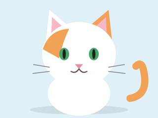
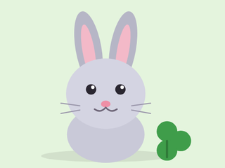
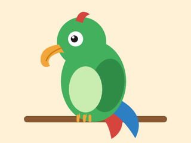

Biscuit
Dog · 3 years · Loves fetch, belly rubs, and anyone holding a snack.
Northern Paws Rescue opens its doors at 10 a.m. this Saturday. Four animals are waiting for a home, and every one of them is ready to meet you.
Meet the petsDog · 3 years · Loves fetch, belly rubs, and anyone holding a snack.

Cat · 2 years · Professional napper with strong opinions about sunbeams.

Rabbit · 1 year · Does a happy mid-air flip (called a binky) whenever someone new walks in.

Parrot · 6 years · Knows eleven words. Three of them are "treat."